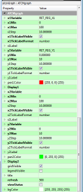

Questo oggetto permette la visualizzazione di un grafico a due tracce.
Per utilizzarlo seguire i seguenti passi:
Trascinare l’oggetto sulla pagina e fare doppio click.

Definire la variabile x1Variable con il nome della variabile della Crosstable da cui si vuole leggere il valore usato per rappresentare l’ascissa della traccia 1. Premere il bottone “…” per selezionare la variabile desiderata.
Definire le variabili x1Min e x1Max con il nome delle variabili della Crosstable da cui si vuole leggere i valori usati per rappresentare l’intervallo di ascisse della traccia 1. Se esso è fisso, mettere il numero stesso al posto del nome della variabile altrimenti premere il bottone “…” per selezionare la variabile desiderata. Per dare quindi un effetto di un grafico che scorre lasciare le variabili di default: PLC_timeMin e PLC_timeMax.
Definire la variabile y1Variable con il nome della variabile della Crosstable da cui si vuole leggere il valore usato per rappresentare l’ordinata della traccia 1. Premere il bottone “…” per selezionare la variabile desiderata.
Definire le variabili y1Min e y1Max con il nome delle variabili della Crosstable da cui si vuole leggere i valori usati per rappresentare l’intervallo di ordinate della traccia 1. Se esso è fisso, mettere il numero stesso al posto del nome della variabile altrimenti premere il bottone “…” per selezionare la variabile desiderata. Definire la variabile x2Variable con il nome della variabile della Crosstable da cui si vuole leggere il valore usato per rappresentare l’ascissa della traccia 2. Premere il bottone “…” per selezionare la variabile desiderata.
Definire le variabili x2Min e x2Max con il nome delle variabili della Crosstable da cui si vuole leggere i valori usati per rappresentare l’intervallo di ascisse della traccia 2. Se esso è fisso, mettere il numero stesso al posto del nome della variabile altrimenti premere il bottone “…” per selezionare la variabile desiderata. Per dare quindi un effetto di un grafico che scorre lasciare le variabili di default: PLC_timeMin e PLC_timeMax.
Definire la variabile y2Variable con il nome della variabile della Crosstable da cui si vuole leggere il valore usato per rappresentare l’ordinata della traccia 2. Premere il bottone “…” per selezionare la variabile desiderata.
Definire le variabili y2Min e y2Max con il nome delle variabili della Crosstable da cui si vuole leggere i valori usati per rappresentare l’intervallo di ordinate della traccia 2. Se esso è fisso, mettere il numero stesso al posto del nome della variabile altrimenti premere il bottone “…” per selezionare la variabile desiderata.
Definire le variabili Display1 e Display2 con il nome delle variabili della Crosstable da cui si vuole leggere il trigger per visualizzare rispettivamente la traccia 1 e la traccia 2. Se vuoti, i trigger sono attivati automaticamente al cambiare di uno dei valori in ingresso. Premere il bottone “…” per selezionare la variabile desiderata.